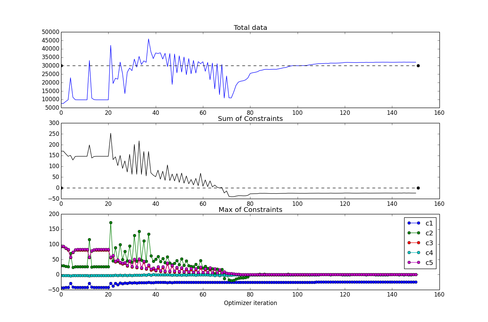

Running the Full CADRE Problem¶
The previous tutorials provided short practical introductions to some of the OpenMDAO components which are used in the CADRE problem. To run the full CADRE problem:
- Obtain a license and source code for SNOPT
- Build and install PyOpt with SNOPT support
- Install pyopt_driver for OpenMDAO
The CADRE optimization problem can then be run by importing and running the CADRE_Optimization assembly:
from openmdao.lib.casehandlers.api import CSVCaseRecorder
from CADRE import CADRE_Optimization
print "setting up"
top = CADRE_Optimization(n=1500, m=300)
top.driver.recorders = [CSVCaseRecorder(filename='CADRE.csv')]
printvars = []
for var in ['Data', 'ConCh', 'ConDs', 'ConS0', 'ConS1', 'SOC']:
printvars += ["pt" + str(i) + ".Data" for i in xrange(6)]
top.driver.printvars = printvars
print "running"
top.run()
This is implemented in example.py, in the top-level directory of the CADRE plugin repository. The purpose of the CSV case recorder is to save the state of the optimization after each iteration of the assembly’s driver. These iteration states will be saved as lines in the file CADRE.csv. You can read from this file and examine the performance of the optimization after the optimization has completed or even while the optimization is still occurring.
An example of how this file may be inspected:
import csv
import numpy as np
import pylab
f = open("CADRE.csv", "rb")
reader = csv.DictReader(f, skipinitialspace=True)
X, Y, Z = [], [], []
pcom = []
for row in reader:
data = [row["pt" + str(i) + ".Data[0][1499]"] for i in xrange(6)]
sumdata = sum([float(i) for i in data if i])
c1 = [row["Constraint ( pt" + str(i) + ".ConCh<=0 )"] for i in xrange(6)]
c2 = [row["Constraint ( pt" + str(i) + ".ConDs<=0 )"] for i in xrange(6)]
c3 = [row["Constraint ( pt" + str(i) + ".ConS0<=0 )"] for i in xrange(6)]
c4 = [row["Constraint ( pt" + str(i) + ".ConS1<=0 )"] for i in xrange(6)]
c5 = [row["Constraint ( pt" + str(i) + ".SOC[0][0]=pt" + str(i) + ".SOC[0][-1] )"]
for i in xrange(6)]
# c1_f = np.all([float(i) < 0 for i in c1 if i])
# c2_f = np.all([float(i) < 0 for i in c2 if i])
# c3_f = np.all([float(i) < 0 for i in c3 if i])
# c4_f = np.all([float(i) < 0 for i in c4 if i])
# c5_f = np.all([float(i) < 0 for i in c4 if i])
c1_f = sum([float(i) for i in c1 if i])
c2_f = sum([float(i) for i in c2 if i])
c3_f = sum([float(i) for i in c3 if i])
c4_f = sum([float(i) for i in c4 if i])
c5_f = sum([float(i) for i in c5 if i])
feasible = [c1_f, c2_f, c3_f, c4_f, c5_f]
X.append(sumdata), Y.append(sum(feasible)), Z.append(feasible)
print sumdata
Z = np.array(Z)
if not len(Z):
print "no data yet..."
quit()
pylab.figure()
pylab.subplot(311)
pylab.title("total data")
pylab.plot(X, 'b')
pylab.plot([0, len(X)], [3e4, 3e4], 'k--', marker="o")
pylab.subplot(312)
pylab.title("Sum of Constraints")
pylab.plot([0, len(Y)], [0, 0], 'k--', marker="o")
pylab.plot(Y, 'k')
pylab.subplot(313)
pylab.title("Max of Constraints")
pylab.plot([0, len(Z)], [0, 0], 'k--')
pylab.plot(Z[:, 0], marker="o", label="c1")
pylab.plot(Z[:, 1], marker="o", label="c2")
pylab.plot(Z[:, 2], marker="o", label="c3")
pylab.plot(Z[:, 3], marker="o", label="c4")
pylab.plot(Z[:, 4], marker="o", label="c5")
pylab.legend(loc="best")
pylab.show()
This is implemented in readcsv.py, in the top-level directory of the CADRE plugin repository. When run, this will print the total data downloaded for each MDP at each iteration of the optimization. This code produces a figure like the following:
{kind=link}
This figure shows several values plotted over the course of the optimization iterations. For this run, the CADRE problem converged in about 150 iterations (six hours or so of runtime on a Macbook Pro 2.3GHz i7). The top subplot shows the objective function value (total data downloaded); the middle subplot shows the maximum value of all constraints (values are all less than or equal to 0 for feasibility); and the bottom subplot shows the maximum constraint values (across the six design points), broken down according to the five constraint types.
During the course of the optimization, the SNOPT optimizer will produce a basis file, fort.10. In the event of a premature termination of the optimization, SNOPT will automatically try to restart from the state determined by this file the next time that the optimization is run in the same directory. If you would rather cold start the problem, this file can simply be deleted prior to initializing an optimization if it exists.
We can easily rerun the problem with different configurations, such as a change in placement of the ground station, different lengths of time for the design points, etc. For example, if we wanted to re-optimize the entire problem but with McMurdo Station, Antarctica, as the ground station, we could run:
from openmdao.lib.casehandlers.api import CSVCaseRecorder
from CADRE import CADRE_Optimization
print "setting up"
top = CADRE_Optimization(n=1500, m=300)
# reset ground station for each CADRE design point
for i in xrange(6):
pt = top.get("pt%s" % str(i))
pt.lat = -77.85 # McMurdo latitude
pt.lon = 166.666667 # longitude
pt.alt = 2.835 # Altitude
top.driver.recorders = [CSVCaseRecorder(filename='CADRE.csv')]
printvars = []
for var in ['Data', 'ConCh', 'ConDs', 'ConS0', 'ConS1', 'SOC']:
printvars += ["pt" + str(i) + ".Data" for i in xrange(6)]
top.driver.printvars = printvars
print "running"
top.run()
This will generate a CADRE.csv file, just as before.
Interactive Visualization of Results¶
Once an optimization of CADRE has successfully completed, you can run generate_maps.py in the top-level directory of the CADRE plugin repository to generate some graphical summaries of the optimized design.
This will render a plot of several optimized parameters over the time period covered by that design point: the data download rate, the power to the communications system, the roll angle, and the battery state-of-charge.
This script will also generate a Google Maps document (HTML file) that has the trajectories of the CADRE satellite plotted for the selected design point. These trajectory lines are colored based on the data download rate of the satellite at that period of time.
Note that an Internet connection is required to load the maps.
Examples of these plots and maps are shown interactively below. You can click on the radio buttons to select between two separate optimizations: one with Ann Arbor, Michigan, as the ground station (default) or one with McMurdo Station, Antarctica, as the ground station. You can also choose to view data for each of the six CADRE design points individually.
Clicking the Earth button in the maps view will render the results using Google Earth (which requires the Google Earth plugin for your browser).
These two plots can be compared directly: peaks in the download rate indicated in the data figure should correspond to a pass of the satellite’s orbit near the selected ground station.
Ground station: Ann Arbor, MI, USA McMurdo Station, Antarctica Design point: 1 month after launch 3 months after launch 5 months after launch 7 months after launch 9 months after launch 11 months after launch All design points (map only) Total Data Downloaded: 30820 Gb |
|
Fullscreen map views:
- Ann Arbor, design point 1
- Ann Arbor, design point 2
- Ann Arbor, design point 3
- Ann Arbor, design point 4
- Ann Arbor, design point 5
- Ann Arbor, design point 6
- Ann Arbor, all design points
- McMurdo Station, design point 1
- McMurdo Station, design point 2
- McMurdo Station, design point 3
- McMurdo Station, design point 4
- McMurdo Station, design point 5
- McMurdo Station, design point 6
- McMurdo Station, all design points
{kind=link}
{kind=link}
{kind=link}
{kind=link}
{kind=link}
{kind=link}
{kind=link}
{kind=link}
{kind=link}
{kind=link}
{kind=link}
{kind=link}
{kind=link}